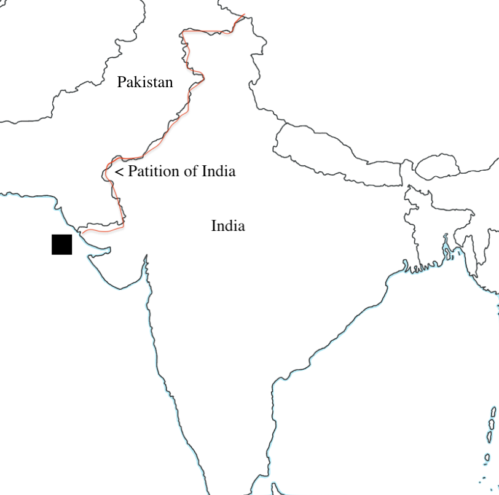

The Partition of India was when India was partitioned into 2 countries, India and Pakistan. There were thoughts about letting the Indians rule themselves since the early 1900s. In 1935, British India would get dominion status, where India would govern itself under the British Crown (in a way like a territory), only if princely states became a part of this structure. Most of these states did not agree to this. When Britain declared war on Germany(which lead into WWII), they also involuntarily declared that India would fight. Because of this, the Congress of the Provinces decided to resign from their jobs to protest. Britain then demanded that India join the war. The problem remained that India didn't have full independence. The solution luckily arrived. The war was getting rough, and the Labour Party rose to be the main power of Britain, promising that they would free India as providing services to India was making them lose money, money they needed for the war. Britain wanted to keep India, but the protests and the war's burdening costs made it impossible. Soon enough, the British sent the Cabinet Mission to ensure power would be transferred safely. Then, the Muslin Minority leader, Mohamad Ali Jinnah voiced that he wanted a separate safe country for Muslims. He declared August 16th, 1946 as "Direct Action Day", and this led to mass killings over religion all across the country. Soon, it was agreed that a new country would emerge: Pakistan. Because of this, people in Pakistan who were Hindus had to come to India, and Muslims from India had to go to Pakistan. In The Night Diary, Nisha and her family had gone from Pakistan to India, and it was a perilous journey. The Partition of India was significant because it changed an entire region, and created one of the biggest mass migrations in history, taking millions out of their homes. The Indian Partition also caused Indian-Pakistani and Hindu-Muslim tensions that still last to this day. The Partition was a massive event, and it has effects that are still visible in India. (The Partition)
